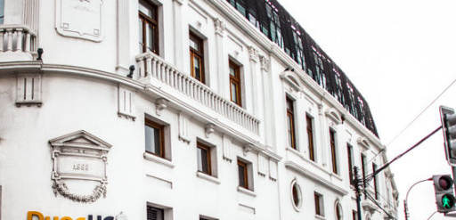

26 de Agosto 9:00
Celebración del Mes Técnico Profesional: Innovación y Energía en Duoc UC sede Maipú
Únete a la celebración del Mes Técnico Profesional en Duoc UC Maipú el 26 de agosto de 2024. Desde las 9:00 a 13:00 horas, te invitamos a una jornada llena de aprendizaje y actividades, destacando una charla sobre Hidrógeno Verde por Ángel Caviedes Cabezas del Ministerio de Energía. Además, contaremos con la participación de estudiantes

Ver evento
Inscribirse
26 de Agosto 9:00
Mes Educación TP: Seminario Conecta Región Especial
Únete a la celebración del Mes Técnico Profesional en Duoc UC Maipú el 26 de agosto de 2024. Desde las 9:00 a 13:00 horas, te invitamos a una jornada llena de aprendizaje y actividades, destacando una charla sobre Hidrógeno Verde por Ángel Caviedes Cabezas del Ministerio de Energía.